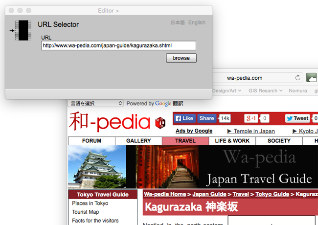

URL Selector
URL Selector acquires the uniform resource locator (URL) as an attribute of a feature or association instance under the linkage between Editor page. URL is one of place attribute types in gittok.
Operation procedure
1. Past or key-in an appropriate URL in URL field.
2. Open home page for the Confirmation of URL by clicking "browse" button.
3. URL appears at value field by clicking "add" button located under Attribute ID List in Editor page.
URL Selector

Figure 1. URL Selector
Fields
URL (editable)
Past or key-in an appropriate URL in this field.
Buttons
browse
Display Home page indicated by the URL.
日本語
今あなたが読んでいるドキュメントが表示されます．
English
You can read the tutorial written in English.